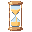

<!doctype html>
<html lang="es">
<head>
<meta charset="utf-8">
<meta name="viewport" content="width=device-width,initial-scale=1">
<title>PROTOTIPO · Escritorio = Remoto</title>
<!-- PROTOTIPO DESECHABLE (grill, cierre fase 1). Cómo debería verse el escritorio Linux
     para ser igual al remoto: acciones a la izquierda, pestañas limpias, reacomodo suave.
     Datos reales del 30-sep. Todo en memoria. -->
<style>
:root{--bg:#0b1119;--panel:#101824;--panel2:#141e2c;--line:#223044;--line2:#2e3852;--ink:#e6edf5;--mut:#8a98ab;--dim:#5d6b7e;--acc:#8b7cf6;--green:#4ade80;--amber:#f5b83d;--red:#f87171;--blue:#60a5fa}
*{box-sizing:border-box}html,body{margin:0;height:100%;background:#070b11;color:var(--ink);font:13px/1.4 system-ui,sans-serif;overflow:hidden}
button{font:inherit;color:inherit;background:none;border:0;cursor:pointer}
.win{position:fixed;inset:0;display:grid;grid-template-rows:38px 1fr;background:var(--bg)}
/* barra de ventana: solo marca + controles (todas las acciones viven en la barra lateral) */
.titlebar{display:flex;align-items:center;padding:0 12px;border-bottom:1px solid var(--line);background:#0d1119}
.titlebar b{font:700 11px system-ui;letter-spacing:1.6px;display:flex;align-items:center;gap:8px}
.titlebar b i{width:8px;height:8px;border-radius:50%;background:var(--green)}
.titlebar .wc{margin-left:auto;display:flex;gap:14px;color:var(--dim)}
.body{display:grid;grid-template-columns:var(--side,300px) 1fr;min-height:0}
/* barra lateral = la misma del remoto */
.side{border-right:1px solid var(--line);background:var(--panel);display:flex;flex-direction:column;min-height:0}
.actions{display:flex;flex-wrap:wrap;gap:8px;padding:10px 12px;border-bottom:1px solid var(--line)}
.k{height:36px;min-width:36px;padding:0 10px;border:1px solid var(--line);border-radius:10px;background:var(--panel2);box-shadow:0 3px 0 var(--line2);display:inline-flex;align-items:center;justify-content:center;gap:6px;color:var(--mut);position:relative;transform:translateY(-1px);transition:transform .06s,box-shadow .06s}
.k:active{transform:translateY(2px);box-shadow:none}
.k svg{width:17px;height:17px;stroke:currentColor;fill:none;stroke-width:1.8;stroke-linecap:round;stroke-linejoin:round}
.k img{width:22px;height:22px;image-rendering:pixelated}
.k .badge{position:absolute;top:-7px;right:-8px;min-width:18px;height:18px;padding:0 5px;border-radius:9px;background:var(--amber);color:#1a1300;font:800 11px/18px system-ui;text-align:center}
.k.remote{color:var(--green);border-color:#1f5134}
.clock{margin-left:auto;font:600 13px ui-monospace,monospace;color:var(--mut);align-self:center}
.srv{margin:8px 12px 0;padding:6px 10px;border:1px solid var(--line);border-radius:8px;font:600 10px system-ui;letter-spacing:.8px;color:var(--mut);display:inline-flex;gap:6px;align-self:flex-start}
.cards{overflow:auto;padding:10px 12px;display:flex;flex-direction:column;gap:8px}
.card{border:1px solid var(--line);border-radius:12px;background:var(--panel2);padding:10px 12px}
.card.cur{border-color:var(--green)}
.card .h{display:flex;align-items:center;gap:8px;font-weight:700}
.card .h small{font-weight:500;color:var(--dim);margin-left:auto}
.card .m{margin-top:6px;font-size:11px;color:var(--mut)}
.chip{display:inline-block;font:700 10px ui-monospace,monospace;padding:1px 6px;border-radius:5px;border:1px solid var(--line2);color:var(--mut);margin-right:4px}
.foot{margin-top:auto;padding:10px 12px;border-top:1px solid var(--line);display:grid;grid-template-columns:1fr 1fr;gap:8px}
.foot div{background:var(--panel2);border-radius:10px;padding:8px 10px}
.foot b{font-size:18px;display:block}.foot small{color:var(--dim);font-size:10px;letter-spacing:.6px}
/* área de trabajo */
.main{display:grid;grid-template-rows:44px 1fr;min-width:0;min-height:0}
.strip{display:flex;align-items:stretch;border-bottom:1px solid var(--line);background:var(--panel);overflow:hidden;position:relative}
.strip .nav{width:36px;display:grid;place-items:center;color:var(--dim);flex:none}
.tabs{display:flex;flex:1;min-width:0;overflow:hidden;position:relative}
.tab{flex:none;display:flex;align-items:center;gap:8px;padding:0 12px;border-right:1px solid var(--line);color:var(--mut);white-space:nowrap;user-select:none;cursor:grab;position:relative;background:var(--panel);transition:transform .28s cubic-bezier(.3,1.35,.5,1),opacity .2s,box-shadow .2s}
.tab.cur{color:var(--ink);background:var(--panel2);box-shadow:inset 0 -2px var(--acc)}
.tab .name{font-weight:600}
.tab .model{font:600 10px ui-monospace,monospace;color:var(--dim)}
.tab .star{color:var(--dim);font-size:12px;opacity:0;transition:opacity .15s}
.tab .x{color:var(--dim);opacity:0;transition:opacity .15s;font-size:14px}
.tab:hover .star,.tab:hover .x,.tab .star.on{opacity:1}.tab .star.on{color:var(--amber)}
.tab .stk{font:800 8px system-ui;letter-spacing:.4px;padding:2px 5px;border-radius:5px;transform:rotate(-6deg);text-transform:uppercase}
.stk.done{background:#1f5134;color:#b9ffd4}.stk.parked{background:#1e3a5f;color:#9cd0ff}
.tab .sug{font:600 10px system-ui;padding:1px 7px;border-radius:999px;border:1px dashed var(--green);color:var(--green)}
.ai{width:16px;height:16px;flex:none;image-rendering:pixelated}
.tab.lift{z-index:5;cursor:grabbing;transform:translateY(-3px) scale(1.05);box-shadow:0 12px 26px #000b,inset 0 -2px var(--acc);background:#1b2438;transition:none}
.tab.pushL{transform:translateX(-14px)}.tab.pushR{transform:translateX(14px)}
.caret{position:absolute;top:6px;bottom:6px;width:3px;margin-left:-1.5px;border-radius:2px;background:var(--acc);box-shadow:0 0 12px var(--acc);pointer-events:none;transition:left .1s}
.term{background:#0a0f16;padding:14px 18px;font:13px/1.65 ui-monospace,monospace;color:#b9c6d6;overflow:auto;display:grid;grid-template-columns:1fr 1fr;gap:14px}
.pane{border:1px solid var(--line);border-radius:10px;padding:10px;min-height:0;overflow:hidden;position:relative}
.pane.cur{border-color:var(--green)}
.pill{display:inline-flex;align-items:center;gap:8px;padding:3px 10px;border:1px solid var(--line2);border-radius:999px;background:var(--panel);font-size:11px;margin-bottom:10px}
.pill .yes{color:var(--green);font-weight:800}.pill .no{color:var(--red);font-weight:800}
.g{color:var(--green)}.d{color:var(--dim)}
/* bandejas y avisos */
.trays{position:fixed;left:55%;bottom:70px;transform:translateX(-50%);display:flex;gap:12px;z-index:40}
.tray{width:112px;height:70px;border:2px dashed var(--line2);border-radius:14px;background:#0f1622f0;display:grid;place-items:center;font-weight:700;color:var(--mut)}
.tray.hl{border-style:solid;color:var(--ink);transform:scale(1.08)}
.hint{position:fixed;left:50%;bottom:18px;transform:translateX(-50%);background:#1c2540;border:1px solid #3b4a74;padding:8px 14px;border-radius:12px;color:#c9d4e8;z-index:39;font-size:12px}
/* picker */
.picker{position:fixed;right:14px;bottom:14px;z-index:99;width:450px;background:#17122a;color:#ece8ff;border:1px solid #3b3170;border-radius:14px;box-shadow:0 18px 50px #000c;padding:10px;font-size:13px;user-select:none}
.picker .drag{cursor:move;display:flex;gap:8px;align-items:center;margin-bottom:8px}.picker .drag b{margin-right:auto}
.picker .nav2{display:grid;grid-template-columns:30px 1fr 30px;gap:6px}
.picker .nav2 button,.picker .opts button,.picker .st button{border:1px solid #3b3170;border-radius:7px;height:30px}
.picker .name{border:1px solid #8b7cf6;background:#241c44;border-radius:7px;display:flex;align-items:center;padding:0 10px;font-weight:600}
.picker .opts{display:grid;grid-template-columns:repeat(3,1fr);gap:4px;margin-top:6px}
.picker .opts button.on,.picker .st button.on{background:#8b7cf6;color:#12091f}
.picker .st{display:flex;gap:6px;margin-top:8px;flex-wrap:wrap}.picker .st button{padding:0 8px}
.picker .desc{margin-top:8px;color:#c9c1f4;font-size:12px}
/* variante ACTUAL (para comparar) */
.vNOW .titlebar .acts{display:flex;gap:6px;margin-left:auto;margin-right:16px}
.vNOW .titlebar .acts .k{height:30px;min-width:30px}
.vNOW .side .actions .k.only{display:none}
.vNOW .tab .star,.vNOW .tab .x{opacity:1}
.vNOW .tab{gap:5px}
.vNOW .tab .badgeA{font:700 10px system-ui;color:var(--mut)}
.vNOW .tab.pushL,.vNOW .tab.pushR{transform:none}
.vNOW .tab.lift{transform:none;box-shadow:inset 0 -2px var(--acc);opacity:.4}
/* variante B: acciones en la titlebar pero a la IZQUIERDA (igual orden que remoto) */
.vB .titlebar .acts{display:flex;gap:6px;margin-left:16px}
.vB .titlebar .acts .k{height:30px;min-width:30px}
.vB .side .actions{display:none}
</style>
</head>
<body>
<div class="win" id="win"></div>
<div class="picker" id="picker"></div>
<script>
const AI={work:'assets/hourglass/comandos/00.png'};
const G='#4ade80',A='#f5b83d',R='#f87171',D='#5d6b7e';
const ICO={
 work:`<svg class="ai" viewBox="0 0 20 20" shape-rendering="crispEdges"><g class="gear" fill="${G}"><rect x="8" y="1" width="4" height="4"/><rect x="8" y="15" width="4" height="4"/><rect x="1" y="8" width="4" height="4"/><rect x="15" y="8" width="4" height="4"/><rect x="3" y="3" width="3" height="3"/><rect x="14" y="3" width="3" height="3"/><rect x="3" y="14" width="3" height="3"/><rect x="14" y="14" width="3" height="3"/><rect x="5" y="5" width="10" height="10"/></g><rect x="8" y="8" width="4" height="4" fill="#0b1119"/></svg>`,
 need:`<svg class="ai" viewBox="0 0 20 20" shape-rendering="crispEdges"><rect x="2" y="2" width="16" height="12" fill="${A}"/><rect x="6" y="14" width="4" height="4" fill="${A}"/><g class="bang" fill="#1a1300"><rect x="9" y="4" width="2" height="5"/><rect x="9" y="10" width="2" height="2"/></g></svg>`,
 done:`<svg class="ai" viewBox="0 0 20 20" shape-rendering="crispEdges"><rect x="5" y="2" width="2" height="16" fill="#9aa6bf"/><g class="flag" fill="${G}"><rect x="7" y="3" width="10" height="7"/></g></svg>`,
 idle:`<svg class="ai" viewBox="0 0 20 20" shape-rendering="crispEdges"><rect x="6" y="6" width="8" height="8" fill="none" stroke="${D}" stroke-width="2"/></svg>`};
const HG=``;
const I={term:'<svg viewBox="0 0 24 24"><path d="m5 8 4 4-4 4M12 17h7"/></svg>',db:'<svg viewBox="0 0 24 24"><ellipse cx="12" cy="5" rx="8" ry="3"/><path d="M4 5v14c0 1.7 3.6 3 8 3s8-1.3 8-3V5M4 12c0 1.7 3.6 3 8 3s8-1.3 8-3"/></svg>',
 phone:'<svg viewBox="0 0 24 24"><rect x="5" y="2" width="14" height="20" rx="2"/><path d="M12 18h.01"/></svg>',bell:'<svg viewBox="0 0 24 24"><path d="M6 8a6 6 0 1 1 12 0c0 7 3 9 3 9H3s3-2 3-9"/><path d="M10.3 21a1.9 1.9 0 0 0 3.4 0"/></svg>',
 spark:'<svg viewBox="0 0 24 24"><path d="M12 3l1.8 5.2L19 10l-5.2 1.8L12 17l-1.8-5.2L5 10l5.2-1.8z"/><path d="M19 3v4M17 5h4"/></svg>',gear:'<svg viewBox="0 0 24 24"><circle cx="12" cy="12" r="3"/><path d="M12 2v3M12 19v3M4.2 4.2l2.1 2.1M17.7 17.7l2.1 2.1M2 12h3M19 12h3M4.2 19.8l2.1-2.1M17.7 6.3l2.1-2.1"/></svg>',
 plus:'<svg viewBox="0 0 24 24"><path d="M12 5v14M5 12h14"/></svg>',sort:'<svg viewBox="0 0 24 24"><path d="M7 4v16M3 8l4-4 4 4M17 20V4M13 16l4 4 4-4"/></svg>',chev:'<svg viewBox="0 0 24 24"><path d="m9 18 6-6-6-6"/></svg>'};
const TABS=[
 {id:'t1',name:'Dashboard',model:'opus-5',ai:'need'},{id:'t2',name:'FerLongoria',model:'opus-5',ai:'need'},{id:'t3',name:'Cobbler',model:'opus-5',ai:'need'},
 {id:'t4',name:'NinjaCatBot',model:'fable-5-1',ai:'need'},{id:'t5',name:'ComandOS ⎇',model:'fable-5-1 +1',ai:'work',fav:true,cur:true},
 {id:'t6',name:'PaginasWeb',model:'opus-5-5',ai:'done',mark:'done'},{id:'t7',name:'SAVA',model:'fable-5-1',ai:'idle',mark:'parked'},{id:'t8',name:'MRP',model:'opus-5-5',ai:'work'}];
const V=[
 {k:'NOW',n:'Actual (para comparar)',d:'Así está hoy el escritorio: acciones arriba a la derecha (distinto al remoto), pestañas con logo A + modelo + ★ + ✕ siempre visibles y apretados, reacomodo sin animación (la pestaña solo se atenúa).'},
 {k:'A',n:'Igual al remoto · acciones en la barra lateral',d:'La barra de ventana queda solo con la marca y los controles. Las acciones (>_, Analytics, Remoto, reloj, Pomodoro, avisos, Resúmenes, Ajustes) van arriba de la barra lateral, EXACTAMENTE como en remoto. Pestañas: semáforo pixel + nombre + modelo; ★ y ✕ aparecen al pasar el cursor. Reacomodo con resorte: las demás se apartan y encaja al soltar.'},
 {k:'B',n:'Acciones en la barra de ventana, a la izquierda',d:'Mismas pestañas y reacomodo que A, pero las acciones viven en la barra de ventana pegadas a la marca (lado izquierdo), aprovechando esos 38 px. La barra lateral empieza directo con Servidores y las tarjetas.'},
];
const P=new URLSearchParams(location.search);
const S={i:Math.max(0,V.findIndex(v=>v.k===P.get('variant'))),side:300,trays:false};
const $=s=>document.querySelector(s);
function acts(cls=''){return `<button class="k ${cls}" title="Terminal">${I.term}</button><button class="k ${cls}" title="Nueva sesión">${I.plus}</button><button class="k ${cls}" title="Ordenar una vez">${I.sort}</button>
 <button class="k ${cls}" title="Analytics">${I.db}</button><button class="k remote ${cls}" title="Remoto">${I.phone}</button>
 <button class="k ${cls}" title="Pomodoro">${HG}</button><button class="k ${cls}" title="Avisos">${I.bell}<span class="badge">36</span></button><button class="k ${cls}" title="Resúmenes">${I.spark}</button><button class="k ${cls}" title="Ajustes">${I.gear}</button>`;}
function tab(t,i){const now=V[S.i].k==='NOW';
  return `<div class="tab ${t.cur?'cur':''}" data-i="${i}" data-id="${t.id}">${ICO[t.ai]}${now?'<span class="badgeA">A</span>':''}<span class="name">${t.name}</span><span class="model">${t.model}</span>
   ${t.mark?`<span class="stk ${t.mark}">${t.mark==='done'?'Hecho':'Aparcado'}</span>`:''}${t.ai==='done'&&!t.mark?'<span class="sug">¿Hecho? ✓</span>':''}
   <span class="star ${t.fav?'on':''}">${t.fav?'★':'☆'}</span><span class="x">✕</span></div>`;}
function render(){
  const v=V[S.i];document.body.className='v'+v.k;
  $('#win').innerHTML=`<div class="titlebar"><b><i></i>COMANDOS</b>${v.k==='B'?`<div class="acts">${acts()}</div>`:''}${v.k==='NOW'?`<div class="acts">${acts()}</div>`:''}<span class="wc">— ▢ ✕</span></div>
  <div class="body" style="--side:${S.side}px"><aside class="side">
   ${v.k!=='NOW'&&v.k!=='B'?`<div class="actions">${acts()}<span class="clock">08:39</span></div>`:''}
   ${v.k==='NOW'?`<div class="actions"><button class="k">${I.term}</button><button class="k">${I.db}</button><button class="k remote">${I.phone}</button><span class="clock">08:39</span></div>`:''}
   <span class="srv">▤ SERVIDORES (18) ▾</span>
   <div class="cards">
    <div class="card cur"><div class="h">${ICO.work}ComandOS #30 <small>trabajando</small></div><div class="m"><span class="chip">A Claude Code → Claude</span><span class="chip">fable-5-1 · $$$</span></div><div class="m">Configurar IA · Claude Fable 5.1 · esta sesión</div></div>
    <div class="card"><div class="h">${ICO.done}ComandOS #1 <small>hace 9 s</small></div><div class="m"><span class="chip">opus-5-5 · high</span> <span class="sug">¿Hecho? ✓</span></div><div class="m">Revisión de C2 en curso.</div></div>
    <div class="card"><div class="h">${ICO.idle}ComandOS #45 <small>hace 5 s</small></div><div class="m"><span class="chip">SH SHELL · SHELL</span></div><div class="m">descansando</div></div>
   </div>
   <div class="foot"><div><b>2.0 h</b><small>EN FOCO</small></div><div><b>22</b><small>AGENTES ACTIVOS</small></div></div></aside>
  <div class="main"><div class="strip"><div class="nav" style="transform:rotate(180deg)">${I.chev}</div><div class="tabs" id="tabs">${TABS.map(tab).join('')}</div><div class="nav">${I.chev}</div></div>
   <div class="term"><div class="pane"><div class="pill">A opus-5 · high ✓ <span class="d">⚙</span> <span class="yes">Sí</span> <span class="no">No</span> <span class="d">MCPs · Skills</span></div><span class="d">Ran 1 shell command</span><br><span class="g">●</span> Agent(Review Task C1) Sonnet 5.5<br><span class="d">└ Backgrounded agent (↓ to manage · ctrl+o to expand)</span><br><br><span class="g">●</span> Revisión de C1 en curso.</div>
   <div class="pane cur"><div class="pill">A fable-5-1 ✓ <span class="d">⚙</span> <span class="yes">Sí</span> <span class="no">No</span> <span class="d">MCPs · Skills</span></div><span class="g">●</span> Capturing the desktop app as it is now<br><span class="d">└ $ export DISPLAY=:1 …</span><br><br><span class="g">❯</span> _</div></div></div></div>
  <div class="hint">Arrastra una pestaña de lado para reordenar · hacia abajo para marcarla</div>`;
  picker();wire();
}
function picker(){const v=V[S.i];$('#picker').innerHTML=`<div class="drag" data-h><b>Grill · Escritorio = Remoto</b><span style="color:#8f86c2;font-size:11px">←/→</span></div>
 <div class="nav2"><button data-s="-1">←</button><div class="name">${v.k} · ${v.n}</div><button data-s="1">→</button></div>
 <div class="opts">${V.map((x,i)=>`<button class="${i===S.i?'on':''}" data-v="${i}">${x.k==='NOW'?'Actual':x.k}</button>`).join('')}</div><div class="desc">${v.d}</div>`;}
function wire(){
  const bar=$('#tabs');
  bar.querySelectorAll('.tab').forEach(el=>el.addEventListener('pointerdown',e=>{
    if(e.button)return;const from=+el.dataset.i,sx=e.clientX,sy=e.clientY;let lifted=false,caret=null,trays=null,to=from,lastX=sx;
    const mv=ev=>{const dx=ev.clientX-sx,dy=ev.clientY-sy;
      if(!lifted){if(Math.hypot(dx,dy)<7)return;lifted=true;el.classList.add('lift');caret=document.createElement('div');caret.className='caret';bar.appendChild(caret);
        trays=document.createElement('div');trays.className='trays';trays.style.display='none';trays.innerHTML=['❄ Aparcar','⏳ Esperando','✓ Hecho','✕ Quitar'].map(l=>`<div class="tray">${l}</div>`).join('');document.body.appendChild(trays);}
      el.style.transform=`translate(${dx}px,${Math.min(6,Math.max(-3,dy))}px) scale(1.05)`;lastX=ev.clientX;
      const br=bar.getBoundingClientRect();const down=ev.clientY>br.bottom+30;trays.style.display=down?'flex':'none';
      [...trays.children].forEach(t=>{const r=t.getBoundingClientRect();t.classList.toggle('hl',ev.clientX>r.left&&ev.clientX<r.right&&ev.clientY>r.top&&ev.clientY<r.bottom);});
      const tabs=[...bar.querySelectorAll('.tab')];to=from;
      for(const[j,te]of tabs.entries()){const r=te.getBoundingClientRect();if(ev.clientX>=r.left&&ev.clientX<=r.right){to=j+(ev.clientX>r.left+r.width/2?1:0);break;}}
      if(V[S.i].k!=='NOW')tabs.forEach((te,j)=>{if(te===el)return;te.classList.toggle('pushR',from>to&&j>=to&&j<from);te.classList.toggle('pushL',from<to&&j>from&&j<to);});
      const ref=tabs[Math.min(to,tabs.length-1)];const r=ref.getBoundingClientRect();caret.style.left=((to>=tabs.length?r.right:r.left)-br.left+bar.scrollLeft)+'px';caret.style.display=down?'none':'';};
    const up=ev=>{removeEventListener('pointermove',mv);removeEventListener('pointerup',up);if(!lifted){TABS.forEach(t=>t.cur=false);TABS[from].cur=true;render();return;}
      const hl=trays&&[...trays.children].find(t=>t.classList.contains('hl'));trays.remove();caret.remove();
      if(hl){const m=hl.textContent;TABS[from].mark=m.includes('Hecho')?'done':m.includes('Aparcar')?'parked':m.includes('Quitar')?null:'parked';render();return;}
      if(ev.clientY>bar.getBoundingClientRect().bottom+30){render();return;}
      let t2=to;if(t2>from)t2--;const before=new Map([...bar.querySelectorAll('.tab')].map(x=>[x.dataset.id,x.getBoundingClientRect().left]));
      const [t]=TABS.splice(from,1);TABS.splice(t2,0,t);render();
      if(V[S.i].k!=='NOW')document.querySelectorAll('.tab').forEach(x=>{const b=before.get(x.dataset.id);const d=b-x.getBoundingClientRect().left;if(!d)return;x.style.transition='none';x.style.transform=`translateX(${d}px)`;requestAnimationFrame(()=>{x.style.transition='';x.style.transform='';});});};
    addEventListener('pointermove',mv);addEventListener('pointerup',up);}));
}
document.addEventListener('click',e=>{const t=e.target.closest('[data-s],[data-v]');if(!t)return;if(t.dataset.s)S.i=(S.i+ +t.dataset.s+V.length)%V.length;else S.i=+t.dataset.v;history.replaceState(null,'','?variant='+V[S.i].k);render();});
document.addEventListener('keydown',e=>{if(e.key==='ArrowRight'||e.key==='ArrowLeft'){S.i=(S.i+(e.key==='ArrowRight'?1:V.length-1))%V.length;render();}});
(function(){const pk=$('#picker');let sx,sy,ox,oy;pk.addEventListener('pointerdown',e=>{if(!e.target.closest('[data-h]'))return;const r=pk.getBoundingClientRect();sx=e.clientX;sy=e.clientY;ox=r.left;oy=r.top;
 const mv=ev=>{pk.style.left=ox+ev.clientX-sx+'px';pk.style.top=oy+ev.clientY-sy+'px';pk.style.right='auto';pk.style.bottom='auto'};const up=()=>{removeEventListener('pointermove',mv);removeEventListener('pointerup',up)};addEventListener('pointermove',mv);addEventListener('pointerup',up)})})();
render();
</script>
</body>
</html>
